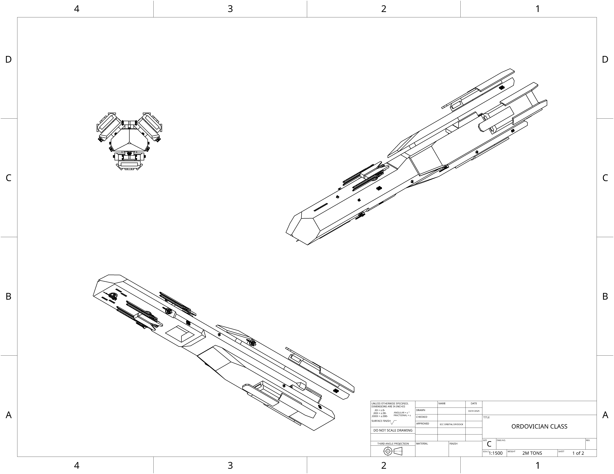

home
ECC Ordovician class Frigate:
Well rounded, nimble guided missile platform, with excellent point defense grid, coming equipped with both;
long range medium acceleration fusion drive missiles, and high acceleration solid fuel torpedoes. Its quad coilgun
arrangement allows it to act as a super heavy close air support asset.

- Main armament:X2 ECC Gauss assisted torpedo projector
- Secondary armerment:ECC HESC missiles
- Secondary armerment:X4 ECC LOSW Gauss
- Point defense complement:X2 ECC RAVEN emplacement
- Point defense complement:X7 ECC PDL
- Shielding capabilities: 250 TerraJoules
- Sensor complement: R700 internal array
- In Atmosphere Acceleration(G): x2 Forward x2 Back
- Heat dissipation rate: X1.7 GiggaWatt
- Tonnage: 2M Metric tons